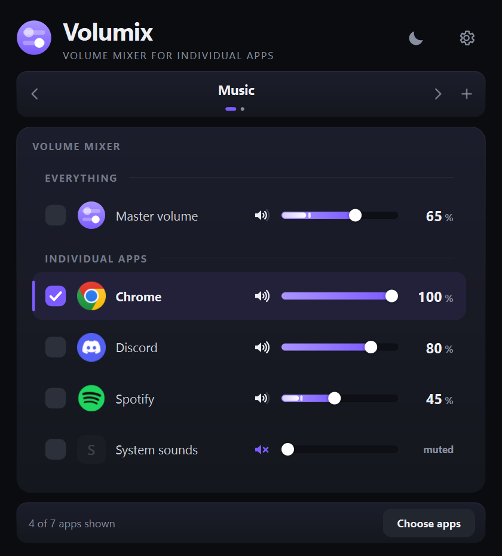

Windows moves everything at once. Volumix points your volume keys at the apps you pick — and leaves the rest alone.
ZIP · 27 MB · no installer
Try it
Windows: everything moves together.

What you get
Every program that makes sound gets its own.
The volume keys on any keyboard. A side wheel, if your mouse has one. Or the scroll wheel over a single row.
See which app is actually making noise.
Save all levels, restore with one click.
A small readout while you turn · English and German · light and dark · twelve accents · lives in the tray
Setup
Volumix.exeSmartScreen asks once — More info, then Run anyway.